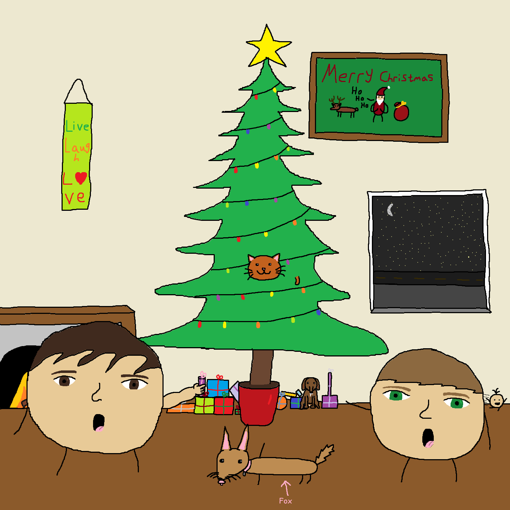

holiday EP made entirely with a sample pack
Closing 2024 with one singular release, The Christmas Collection is the first release where no MIDI instruments were performed by Joseph Madril. Created with a single sample pack, Madril created all of the tracks found on this release within half an hour. The Jazz-influenced holiday EP boasts a total of six tracks while the artwork was designed by Joshua Herron.
The Christmas Collection
release date: 18 december 2024
listen nowtrack lisitngs
credits & personnel
A STiBaRC Records release; ℗&© 2024 JM3 Music, under exclusive license to STiBaRC LLC. Marketed & distributed by STiBaRC LLC.
Catalog code: 9541841